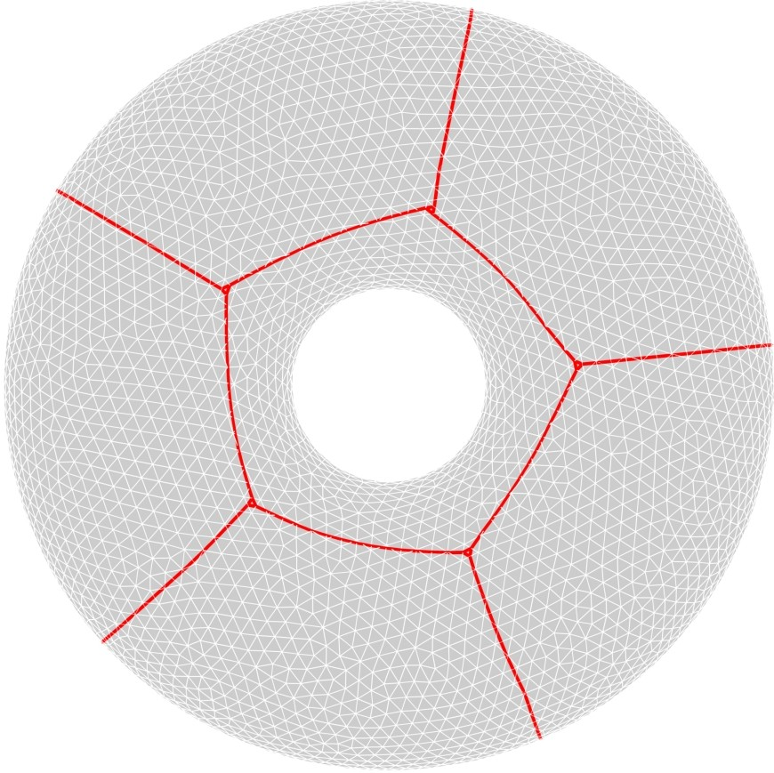
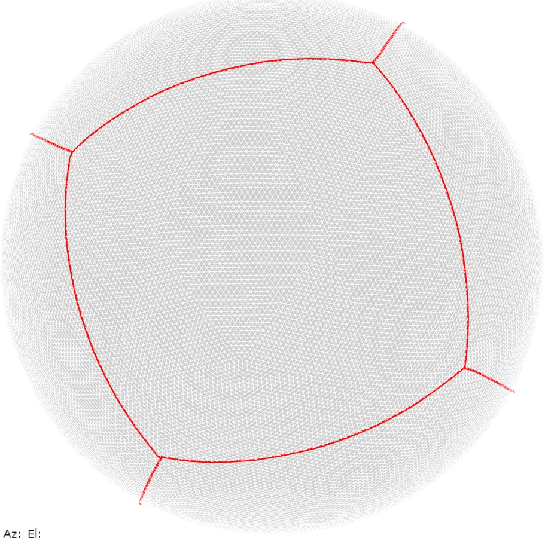
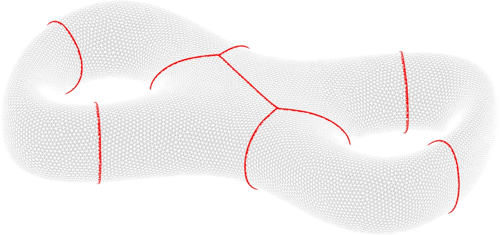
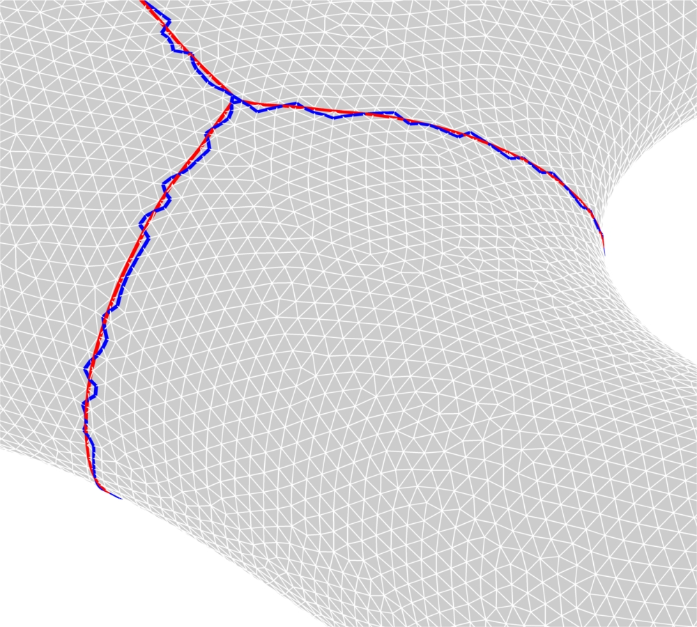
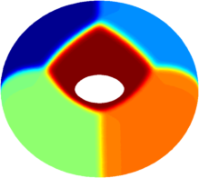
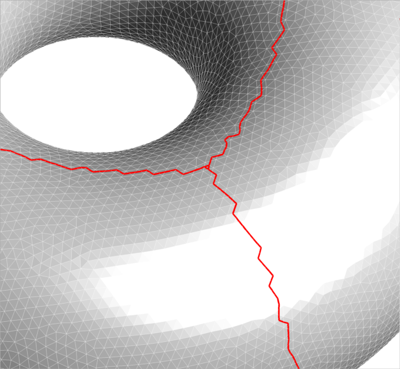
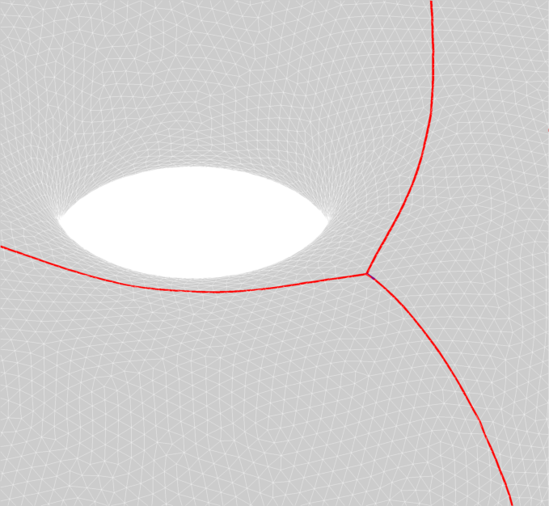

Contour optimization on meshes
This is part of the study of minimal perimeter partitions on surfaces started here (in collaboration with Edouard Oudet). The $\Gamma$-convergence method gives a good approximation of the optimal partition. On the other hand, the optimal cost for the relaxed functional does not give a satisfactory estimation of the total perimeter of the partition. Here we want to compute more precisely this total perimeter.
First, let's note that having the optimal densities allows us to extract the contours of the partition (using, for example tricontour). The problem with the extracted contours is that they follow the triangle boundaries and they are quite zig-zagged. In order to make them smoother we decided to optimize the new contours, with the area constraints, on the triangulated surface. The constrained optimization is made with Matlab's algorithm fmincon. The results obtained are quite satisfactory and thus we obtain a good approximation of the length of the optimal total perimeter of the partitions.
 |
 |
 |
| Torus - $6$ cells | Sphere - $6$ cells | Double torus - $6$ cells |
 |
| Initial contours (blue) vs Optimized contours (red) |
The stages in the optimization algorithm are illustrated below. As said above, initially we perform the optimization in the relaxed formulation. Then we extract the contours of the cells. We finalize by optimizing and smoothing the contours on the triangulated surface.
 |
 |
 |
| Relaxed formulation by $\Gamma$-convergence | Extraction of the contours of cells (note that they are not very regular) | Optimization of the length under area constraint on the triangulated surface. This provides a good approximation of the optimal length of the optimal partition. |
← Back to numerical computations
Created: Feb 2016